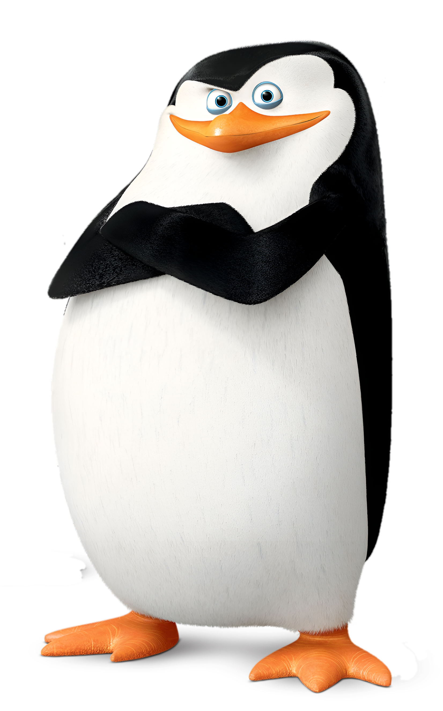
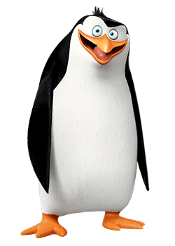

Skipper
Es el líder del escuadrón de pingüinos que vive en el Zoológico de Central Park. Junto con Kowalski, Rico y Private, es personaje secundario en las películas de la franquicia y personaje principal de Los Pingüinos de Madagascar. Skipper entrena a su equipo en tácticas de espionaje y artes marciales. Es el segundo más bajo del grupo y tiene ojos azules.
Kowalski

Es el estratega y segundo al mando en el equipo de Skipper. Junto con Skipper, Rico y Cabo, es un personaje secundario en la películas de Madagascar y personaje principal de Los pingüinos de madagascar. Kowalski es el más alto de los pingüinos, así como el más inteligente.
Rico
Es el especialista y encargado de armas y explosivos de los pingüinos, los cuales almacena en su estómago y regurgita cuando es necesario usarlos. Junto con Skipper, Kowalski y Cabo, es personaje secundario en las películas de la saga y personaje principal de Los Pingüinos de Madagascar. Rico es descrito por los otros pingüinos como psicópata.
Private

Es uno de los miembros del escuadrón de pingüinos. Junto con Skipper, Kowalski y Rico, es un personaje secundario en las películas de la franquicia y personaje principal de Los Pingüinos de Madagascar. Es el más joven, bajito y gordito del grupo.